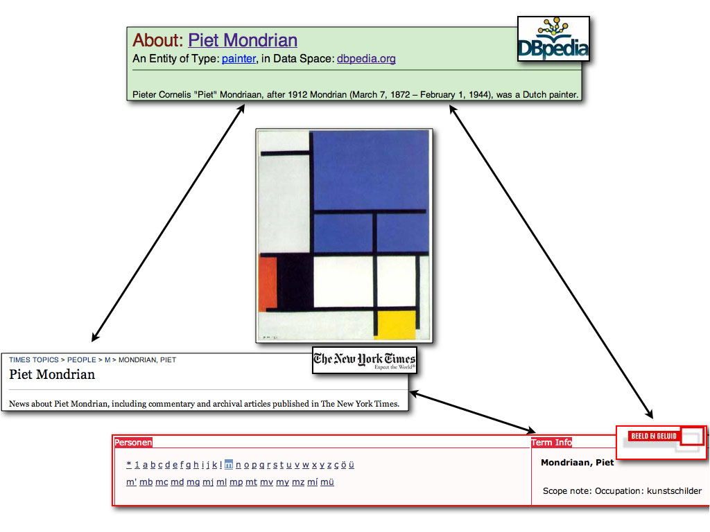

Very Large Crosslingual Resources

The purpose of this task is to match three resources to each other: the Thesaurus of the Netherlands Institute for Sound and Vision (called GTAA), the New York Times subject headings and DBpedia.
The rationale of such a mapping is to open up and connect large collections of data all around the world. Archives, museums and libraries use controlled vocabularies to disclose their collections. Linking these vocabularies to each other, regardless of their language, is a first step towards search and browsing accross collections. Links to other sources of knowledge on the Linked Data Web (such as DBpedia) not only enrich the collections with additional information, but can also serve as hubs that connect multiple collections. This task focuses on Dutch and English sources. The mapping between the GTAA and the New York Times subject headings enables a cross-language (NL/EN) and cross-media (television/news paper) integration of the two collections.
We are aiming for skos:exactMatch relations. According to the SKOS recommendation, a skos:exactMatch link "indicates a high degree of confidence that two concepts can be used interchangeably across a wide range of information retrieval applications". We focus on this relation because our task aims at enabling/enhancing search and browsing through interlinked archives.
Go directly to: New York Times, DBPedia, GTAA, evaluation, schedule, contact
- Set 1: New York Times
- Set 2: DBpedia
- Set 3: GTAA
Fax the signed Non-Disclosure Agreement to +31 15 2786632, at the attention of Laura Hollink, or scan the form and e-mail it to l.hollink at tudelft dot nl.
Motivating examples
If a person is searching the TV archives of The Netherlands Institute for Sound and Vision for programs about Cormorants, the mapping between the GTAA and DBpedia gives this user access to information about the genre, species, synonyms, the wikipedia page and other documents about Cormorants.
A Dutch person interested in TV programs about exhibitions of Mondrain's painting is very likely to be interested in New York Times new articles reporting on the same exhibition (and is very likely to be able to read the material in English too).
We will evaluate all mappings with this general application scenario in mind: enabling/enhancing search and browsing through interlinked archives.
{kind=link}
Data sets
The three resources that we consider are large, and consist mostly of instances; whereas DBpedia is organized according to multiple hierarchies or categorizations, GTAA and the New York Times subject headings are (mostly) flat resources. Whereas DBpedia has labels, abstracts and comments in different languages, GTAA and New York Times subject headings are both monolingual (the former in Dutch, the latter in English). The proposed task can be schematized as in the picture above: a triangular cross-language instance mapping.
New York Times
General Information
| Facet | Nr. of Concepts |
|---|---|
| People | 4.967 |
| Organizations | 3.054 |
| Locations | 1.905 |
| Descriptors | 498 |
SKOS Representation
The SKOS representation of each subject heading facet contains the label of the skos:Concept (skos:label), the facet it belongs to (skos:inScheme), and some specific properties: nyt:associated_article_count for the number of NYT articles the concept is associated with and nyt:topicPage pointing to the topic page (in HTML) gathering different information published on the subject. The concepts have links to DBpedia, Freebase and/or GeoNames. Participants of VLCR are not allowed to use the existing links to DBpedia, as the task is meant to map previously unmapped vocabularies to each other. The Location facet also contains geo-coordinates.Examples of NYT concepts
<rdf:Description rdf:about="http://data.nytimes.com/N13463766342949717891">
<rdf:type rdf:resource="http://www.w3.org/2004/02/skos/core#Concept"/>
<skos:prefLabel xml:lang="en">Oregon Trail</skos:prefLabel>
<skos:inScheme rdf:resource="http://data.nytimes.com/elements/nytd_geo"/>
<geo:long rdf:datatype="&xsd;double">-94.6255127</geo:long>
<geo:lat rdf:datatype="&xsd;double">39.0166723</geo:lat>
<nyt:first_use rdf:datatype="&xsd;date">2008-09-14</nyt:first_use>
<nyt:latest_use rdf:datatype="&xsd;date">2008-09-14</nyt:latest_use>
<nyt:associated_article_count rdf:datatype="&xsd;int">1</nyt:associated_article_count>
<nyt:number_of_variants rdf:datatype="&xsd;int">1</nyt:number_of_variants>
<owl:sameAs rdf:resource="http://dbpedia.org/resource/Oregon_Trail"/>
<owl:sameAs rdf:resource="http://sws.geonames.org/4276727/"/>
<owl:sameAs rdf:resource="http://rdf.freebase.com/ns/en.oregon_trail"/>
<owl:sameAs rdf:resource="http://data.nytimes.com/oregon_trail_geo"/>
</rdf:Description>
<rdf:Description rdf:about="http://data.nytimes.com/21885919306341988023">
<rdf:type rdf:resource="http://www.w3.org/2004/02/skos/core#Concept"/>
<skos:prefLabel xml:lang="en">Johnson, Diane</skos:prefLabel>
<skos:inScheme rdf:resource="http://data.nytimes.com/elements/nytd_per"/>
<nyt:first_use rdf:datatype="&xsd;date">2008-10-24</nyt:first_use>
<nyt:latest_use rdf:datatype="&xsd;date">2008-10-26</nyt:latest_use>
<nyt:associated_article_count rdf:datatype="&xsd;int">2</nyt:associated_article_count>
<nyt:number_of_variants rdf:datatype="&xsd;int">1</nyt:number_of_variants>
<nyt:topicPage rdf:resource="http://topics.nytimes.com/.../diane_johnson/index.html"/>
<owl:sameAs rdf:resource="http://data.nytimes.com/johnson_diane_per"/>
<owl:sameAs rdf:resource="http://rdf.freebase.com/ns/en.diane_johnson"/>
<owl:sameAs rdf:resource="http://dbpedia.org/resource/Diane_Johnson"/>
</rdf:Description>
Obtaining the NYT dataset
Although the official datasets can be freely downloaded from http://data.nytimes.com, we created a local copy to make sure that all VLCR participants work with the same set: the New York Times' website can be updated at any time, and a local copy avoids running into versioning problems. Existing links to DBpedia have been removed from the local copies. The files for the task can be found above.
DBPedia
General Information
DBPedia is an extremely rich dataset. It contains 2.18 million resources or "things", each tied to an article in the English language Wikipedia. The "things" are described by titles and abstracts in English and often also in Dutch. DBPedia "things" have numerous properties, such as categories, properties derived from the wikipedia 'infoboxes', links between pages within and outside wikipedia, etc. The purpose of this task is to map the DBPedia "things" to NYT subjects and GTAA concepts.
All information can be downloaded from the DBPedia download site. For each type of property (title, abstracts, infobox properties, links to pages, etc.), there is a separate file that can be downloaded. Also, small preview files are provided. In the following description we will link to the preview files instead of to the actual content files that you need for the allignment, to prevent multiple downloads of very large files.
Every type of relation from the download site can be used in this OAEI task. However, you are of course not obliged to use them all. You can pick and choose the information that you think is useful and that your tool can handle. A reasonable choice seems to be to use at least the following information: "things", their labels and their comments:
DBPedia "thing" -- rdfs:label -- "title of the wikipedia page" -- rdfs:comment -- "abstract of the wikipedia page"The file Titles (preview) contains labels, available in English and Dutch, which are the titles of the corresponding wikipedia articles. The file Short Abstracts (preview) contains short abstracts, available in English and Dutch.
In addition, we consider the DBpedia ontology and DBpedia categories valuable sources for the current alignment task. Descriptions will be given below.
DBPedia ontology
The DBpedia Ontology is an ontology of currently more than 259 classes, organised in a subsumption hierarchy. The ontology was manually created based on the most commonly used infoboxes of Wikipedia. The file DBpedia Ontology (preview) contains the classes and properties of this ontology, while the file Ontology Infobox Types (preview) contains the instances of the Ontology, i.e. DBpedia "things".
Categories
DBpedia "things" are organised into categories. The file Categories (SKOS) (preview) provides the categories and the SKOS relations between them, while the file Articles Categories (preview) contains the skos:Subject links between "things" and categories.
RDF/OWL and SKOS representation
All DBpedia files are in RDF, and some are in SKOS.GTAA
General Information
The Netherlands Institute for Sound and Vision is the Dutch archive for public broadcast television. They employ the GTAA, which is a Dutch acronym for Common Thesaurus [for] Audiovisual Archives, to index and disclose their audiovisaul documents. The GTAA closely follows the ISO-2788 standard for thesaurus structures, and is representative for many thesauri in the archiving world both in size and scope. The thesaurus consists of 6 facets that concern the description of:
- the topic of a TV program: keywords are selected from the Subject facet
- the main people mentioned in a TV program: keywords are selected from the Person facet
- the main "Named Entities" mentioned in a TV program (Corporation names, music bands etc): keywords are selected from the Name facet
- the main locations mentioned in a TV program or the place where it has been created: keywords are selected from the Location facet
- the genre of a TV program: keywords are selected from the Genre facet
- the makers and presentators of a TV program: keywords are selected from the Makers facet
SKOS Representation
The SKOS version of the GTAA consists of skos:Concepts with Preferred and Alternative labels, related by skos:broader, skos:narrower and skos:related properties. In addition, some concepts are clarified with a skos:scopeNote. Terms in all facets of the GTAA can have Related Terms and Scope Notes, but only the Subject facet has Alternative Labels and Broader Term/Narrower Term relations, the latter organizing the terms into a hierarchy. The hierarchal organisation of the Subject facet is not very dense: 80% of the terms are not involved in hierarchies deeper than 3 levels; the average hierarchy depth is 1.3.
Samples of the datasets are directly available for inspection from Person, Name, Location, Subject, and below are examples from each facet. Each facet is in a different file, but all concepts have a skos:inScheme property that specifies the name of the facet that it belongs to, enabling you to put all the data in only one file if necessary.
Examples of GTAA concepts
<skos:Concept rdf:about="#Subject_alternatieveenergie">
<skos:prefLabel>alternatieve energie</skos:prefLabel>
<skos:inScheme rdf:resource="http://www.beeldengeluid.nl/Thesaurus/Subject"/>
<skos:broader rdf:resource="#Subject_energie"/>
<skos:narrower rdf:resource="#Subject_biobrandstoffen"/>
<skos:narrower rdf:resource="#Subject_windenergie"/>
<skos:narrower rdf:resource="#Subject_zonne-energie"/>
<skos:related rdf:resource="#Subject_alcohol"/>
<skos:related rdf:resource="#Subject_energiebeleid"/>
<skos:related rdf:resource="#Subject_energiebronnen"/>
<skos:related rdf:resource="#Subject_getijden"/>
<skos:related rdf:resource="#Subject_milieubeleid"/>
<skos:related rdf:resource="#Subject_waterkracht"/>
<skos:related rdf:resource="#Subject_waterstof"/>
<skos:altLabel>getijdenenergie</skos:altLabel>
</skos:Concept>
<skos:Concept rdf:about="#Person_BeatrixkoninginNederland"> <skos:prefLabel>Beatrix (koningin Nederland)</skos:prefLabel> <skos:inScheme rdf:resource="http://www.beeldengeluid.nl/Thesaurus/Person"/> <skos:related rdf:resource="#Person_BeatrixkroonprinsesNederland"/> <skos:scopeNote>va30-4-80</skos:scopeNote> </skos:Concept>
<skos:Concept rdf:about="#Name_Abba"> <skos:prefLabel>Abba</skos:prefLabel> <skos:inScheme rdf:resource="http://www.beeldengeluid.nl/Thesaurus/Name"/> <skos:scopeNote>popgroep Zweden</skos:scopeNote> </skos:Concept>
<skos:Concept rdf:about="#Location_Amsterdam"> <skos:prefLabel>Amsterdam</skos:prefLabel> <skos:inScheme rdf:resource="http://www.beeldengeluid.nl/Thesaurus/Location"/> <skos:scopeNote>Nederland</skos:scopeNote> </skos:Concept>
Obtaining the GTAA dataset
The Netherlands Institute for Sound and Vision is currenlty in the process of publishing the GTAA as linked data. However, for the purpose of this mapping task we provide a stable SKOS version of the four relevant facets, that represents the GTAA as it was in 2009. The GTAA is copyrighted material. To obtain the full datasets, please download the user agreement here. Fax the signed agreement to +31 15 2786632, at the attention of Laura Hollink, or scan the form and e-mail it to l.hollink at tudelft dot nl. You will receive by email the password to access the complete dataset.Evaluation
We evaluate the results of the three alignments (GTAA-NYT, GTAA-DBpedia, NYT-DBpedia) in terms of precision and recall. Aside from an overall measure, we also present measures for each GTAA/NYT facet separately.
For precision, we will judge samples of each allignment as being correct or incorrect, and re-use judgements made for the VLCR task in 2009 where applicable. For recall, we will create gold standards for random samples of each GTAA/NYT facet, and re-use gold standards that were made for the VLCR task in 2009 where applicable.
All judgements will be made with our application scenario in mind: enabling/enhancing search and browsing through interlinked archives.
Tentative Schedule
- July
- tests are frozen
- Early September
- participants send preliminary results (for interoperability-checking)
- Late September
- participants send final results and papers
- October
- organisers publish results for comments
- November
- final results ready and OM-2010 workshop.
Acknowledgements
We would like to thanks Evan Sandhaus from the NYT for the fruitful collaboration. We thank Chris Bizer, Fabian Suchanec and Jens Lehman for their help with the DBPedia dataset. We gratefully acknowledge the Dutch Institute for Sound and Vision for allowing us to use the GTAA.
Contacts
Send any questions, comments, or suggestions to:
- Willem Robert van Hage: wrvhage at few dot vu dot nl
- Laura Hollink: l.hollink at tudelft dot nl
- Véronique Malaisé: vmalaise at few dot vu dot nl